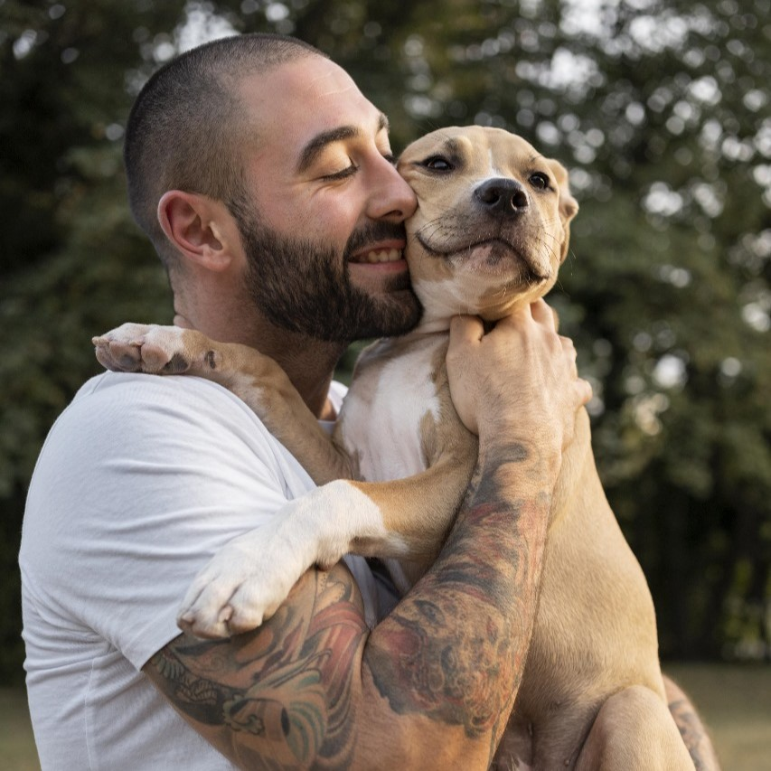
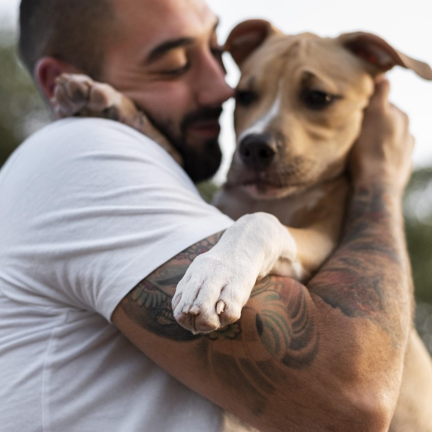

Juan era una persona solitaria y estresada por su rutina diaria. Aunque tenía amigos y familiares cercanos, sentía que algo faltaba en su vida. Todo eso cambió cuando conoció a su leal compañero, un perro llamado Max
Veronica y Sebastian son una pareja hermosa estresada por su rutina diaria. Aunque tenían amigos y familiares cercanos, sentían que les faltaba algo en su vida. Todo eso cambió cuando conocieron a su leal compañero, un perro salchita llamado Ayra

Carmen era una persona solitaria y estresada por su rutina diaria. Aunque tenía amigos y familiares cercanos, sentía que algo faltaba en su vida. Todo eso cambió cuando conoció a su leal compañero, un perro llamado Nova.

Xuxa era una persona solitaria y estresada por su rutina diaria. Aunque tenía amigos y familiares cercanos, sentía que algo faltaba en su vida. Todo eso cambió cuando conoció a su leal compañero, un perro llamado Tobby.

Sergio era una persona solitaria y estresada por su rutina diaria. Aunque tenía amigos y familiares cercanos, sentía que algo faltaba en su vida. Todo eso cambió cuando conoció a su leal compañero, un perro llamado Ken
Maxi era una persona solitaria y estresada por su rutina diaria. Aunque tenía amigos y familiares cercanos, sentía que algo faltaba en su vida. Todo eso cambió cuando conoció a su leal compañero, un perro llamado Betoven